4．戴德金的理想
将代数数的概念一般化之后，戴德金立刻用一个和库默尔十分不同的方案去着手重建代数数域中的唯一因子分解。他引进了代数数类去代替理想数，为了纪念库默尔的理想数，他把它们称为理想（ideal）。
在定义戴德金的理想之前让我们注意根本思想。考虑普通的整数。代替整数2，戴德金考虑整数2m的类，这里m是任何整数。这个类由一切可被2整除的整数构成。类似地，3由一切可被3整除的整数3n的类代替。积6就变成了一切数6p的集合，其中p是任何整数。这时积2·3＝6用下述断语代替：类2m“乘”类3n等于类6p。进而言之，类2m是类6p的因子，而不管在实际上是前者包含后者。这些类是普通整数环中的戴德金称之为理想的例子。为了领会戴德金的工作，人们必须使自己习惯于用数类的术语去思考。
更一般地，戴德金把他的理想定义如下：设K是一个特殊的代数数域，说K的整数A的集合形成一个理想，如果当α和β是这个集合中的任何两个整数时，则整数
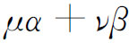
也属于这个集合，这里μ和ν是K中的任何其他代数整数。或者这样说，理想A是由K中的代数整数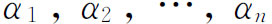
产生的，如果A是由一切和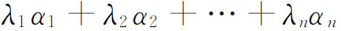
所构成，这里λi是域K中的任何整数。这个理想用（α1，α2，…，αn）来表示。零理想只含有数0，相应地用（0）来表示。单位理想是由数1产生的，记为（1）。如果理想A只是由一个整数α产生的，就称它为主理想，所以（α）是由一切被α整除的代数整数构成的。在普通的整数环中每一个理想都是主理想。
由整数2和
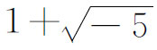
所产生的理想是代数数域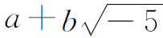
中的理想的一个例子，这里a和b是普通的有理数。这个理想由所有形如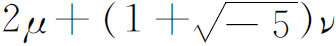
的整数构成，这里μ和ν是这个域中的任意整数。考虑到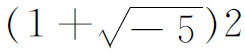
必定属于2所产生的理想这一事实，这个理想是仅由一个数2所产生的，所以它恰巧也是主理想。如果理想
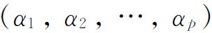
中的每一个成员也是理想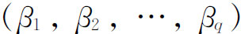
的成员，反之也对，则两理想相等。为了处理因子分解的问题，我们必须首先考虑两个理想的乘积。K中的理想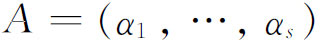
和理想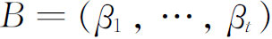
的乘积定义为理想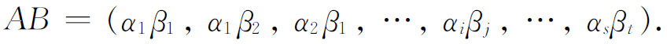
很明显，这个乘积是可交换的和可结合的。凭借这个定义，如果存在一个理想C使得
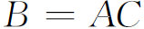
，我们就可以说A整除B，记为A｜B，并称A是B的因子。正像上面普通整数的例子已经启示的，B的元素被包含在A的元素之中，并且普通的可除性由类的包含所代替。类似于通常素数的理想称为素理想。这样的理想P定义为除去自身和理想（1）外不含有其他因子的理想，所以P不被包含在K的任何其他理想之中。由于这个理由，素理想也被称作是最大的。所有这些定义和定理都导致关于代数数域K的理想的基本定理。任何一个理想仅能被有限个理想所整除，并且如果一个素理想整除（同一个数类的）两个理想的乘积AB，则它整除A或B。最后，理想论中的基本定理是，每一个理想能唯一地分解为素理想。
在关于形如
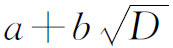
（D为整数）的代数数域的最早的例子中，我们发现，有些代数数域允许有这些域的代数整数的唯一因子分解，另一些则不允许。允许或不允许这一问题的答案是由下述定理给出的：代数数域K的整数能唯一地分解为素因子的充要条件是，K中所有的理想都是主理想。从戴德金著作中的这些例子可以看出，他的理想的理论实际上是普通整数的一般化。特别是他的著作提供了代数数域的概念和性质，使别人能够去建立唯一因子分解定理。
克罗内克（Leopold Kronecker，1823—1891）是库默尔的得意门生，他接替库默尔在柏林大学任教授。他继续研究代数数的问题，并沿着类似于戴德金的路线发展了它。克罗内克的博士论文《论复可逆元素》是他在这个论题上的第一项工作。这篇论文写于1845年，但直到很晚才发表(19)。论文中讨论在高斯所创立的代数数域中可能存在的所有可逆元素。
克罗内克创立了另一种域论（有理性域）(20)。由于他考虑了任意个变量（未定量）的有理函数域，他的域的概念比戴德金的更一般。特别地，克罗内克引进了（1881）添加于域的未定量的概念，未定量恰是一个新的抽象量。用增加未定量去推广域的这种思想，成为他的代数数的理论的基石。在这里他用了由刘维尔（Joseph Liouville）、康托尔（Georg Cantor）和其他数学家所建立的关于代数数与超越数的差别的知识。特别是他注意到，如果x是域K上的一个超越数（x是一个未定量），则由添加未知量x于K而得到的域K（x），也就是包含K与x的最小域，同构于系数在K中的一个变量的有理函数所生成的域K［x］(21)。他确实强调过，这个未定量仅是一个代数元素，而不是一个分析意义下的变量(22)。然后他在1887年(23)证明了对每一个普通素数p，在具有有理系数的多项式环Q（x）中存在一个相应的素多项式p（x），它在有理域Q中是不可约的。两个多项式若以给定的素多项式p（x）为模同余就认为相等，据此，在Q（x）中一切多项式的环就变成了同余类的域，这个域与由添加p（x）＝0的一个根δ于域K而产生的代数数域K（δ）具有相同的代数性质。在这里他用了柯西曾经用过的思想，即用多项式关于模x2＋1同余而引进虚数。在这同一部著作中他说明了代数数的理论独立于代数基本定理和完备的实数系的理论。
在他的域论中（在“Grundzüge”中），其元素是从域K出发然后添加未定量x1，x2，…，xn而形成的，克罗内克引进了模系的概念，这相当于戴德金理论中的理想。对克罗内克而言，一个模系是n个变量
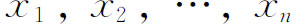
的多项式的一个集合M，具有下述性质：如果P1和P2属于这个集合，则P1＋P2也属于这个集合。如果P属于这个集合，而Q是x1，x2，…，xn的任一多项式，则QP也属于这个集合。模系M的一组基（basis）是指M的多项式B1，B2，…的任何一个集合，使得M的每一个多项式都可表示为形式
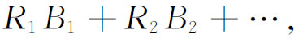
这里R1，R2，…是常数或多项式（不必属于M）。在克罗内克的一般域中，可除性理论是依据模系定义的，很像戴德金用理想来定义。
代数数论的工作在19世纪以希尔伯特（David Hilbert）的“论代数数”的著名报告(24)为顶峰。这个报告主要是记述那个世纪内所做的工作的。但是，希尔伯特重新整理了所有这些早期的理论，并且给出了获得这些结果的新颖、漂亮而强有力的方法。从大约1892年起，他在代数数论中已开始创立的新概念以及关于伽罗瓦数域的一个新创造也一并组织进这个报告中了。其后，希尔伯特和许多其他人大大地扩展了代数数论。但是，这些后来的发展，相对于伽罗瓦域，相对于阿贝尔数域和类域，都刺激着20世纪的大量工作，这些都主要是专家们所关心的。
代数数论，本来是研究古老数论中的问题的解的一种方案，自身却变成了一个目的。它终于在数论和抽象代数之间占据了一席之地。而现在，数论和近世高等代数也被吸收到代数数论之中了。当然，代数数论在普通数论中也产生了新的定理。